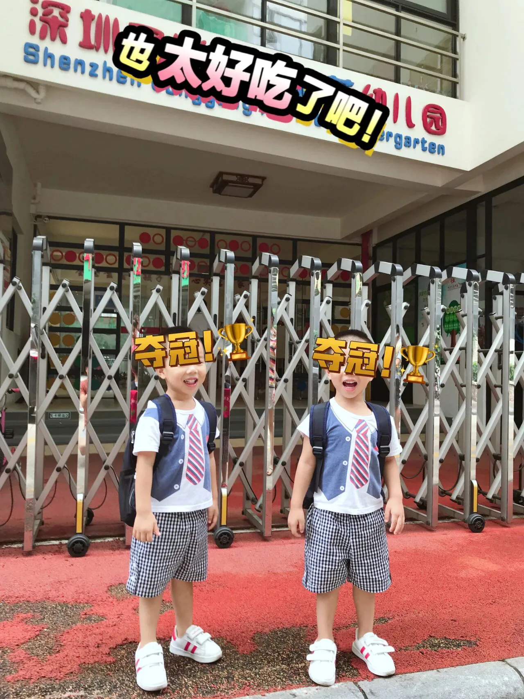
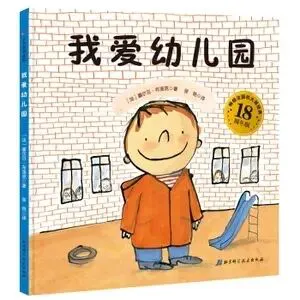

孖仔帮
公众号ID：twinsbang
关注
文|圆圈妈
网图|侵删
掐指一算，早期关注了咱们号的双胞胎孩子们，今年9月份也该上幼儿园了，难怪最近公号后台都在私信问双胞胎入园前有哪些特殊准备。
说到双胞胎上幼儿园，又是一段3千尺瀑布那么长的故事要说...就在上个月，圆圈兄弟刚刚幼儿园毕业，这3年来，为娘我可谓饱经风霜，阅人无数，什么弯路泥坑都走过。
当然，也捡到了很多宝，宝贵经验的【宝】，包括入园前的准备，入园后的非常教育，接下来会写成一个系列分享给小伙伴们，不定期推送在公众号上。
今天这篇先说入园前的准备。
这可是个大BOSS，双胞胎是否顺利入园，入园后是否快速适应集体生活，都跟入园前的准备是否充分息息相关，所以可不能掉以轻心哦。
回顾3年前，圆圈兄弟第一天入园的情景，依然历历在目。
幼儿园门口站着一群鬼哭狼嚎的小萌娃，与欢欣雀跃，没有丝毫忧伤的圆圈哥俩形成鲜明的对比，就在我犹豫着要不要抱抱他们时，圆圈兄弟早已挣脱我的手，像两批脱缰的野马，喜滋滋地扑到迎接在门外的老师身上。
那种欣喜若狂的样子，让我这当妈的至今回想起来还醋意满满。我和圆圈爸，看着他们小小的背影一路蹦蹦跳跳地进入园所，有种“我们很多余”的感觉。
但无可否认，内心的自豪感与欣慰也是真的。相比边上那“史诗灾难片”一样的情形，我暗自庆幸，感谢自己在圆圈兄弟入园前做的那些准备，总算没有白费。
要想双胞胎“零压力，无障碍，超顺利”入园，我认为，你可以从以下3方面开始准备。孩子们入园后虽然也会哭，但内心不会那么恐惧和痛苦。
给孩子做好心理准备
怎么给双胞胎做好入园的心理准备呢？我分享我的做法。
1，先给孩子们描述幼儿园的生活
双胞胎已经3岁了，基本可以理解很多成人的语言，跟孩子们简单介绍下幼儿园，比如幼儿园里有老师，老师会是什么样的，会做什么事情，幼儿园里还有谁，有什么活动，吃饭睡觉是怎么做的...
此时借助绘本，找一些关于宝宝上幼儿园的书籍讲给孩子听，效果会更明显；讲的时候要生动有趣，要用讲故事一样的口吻，轻松自然，不刻意。
我经常给圆圈读的绘本书是《我爱上幼儿园》。
我讲的时候，会把里面的主人翁莱昂，说成是圆圆圈圈，他们很开心，觉得在说自己，更有阅读兴趣了，顺便还穿插一些跟他们相关的生活场景；唱儿歌那一段，我不会唱，只好随意编一个曲，逗得他们哈哈大笑。
我想圆圈能顺利入园，这本书真的功不可没。
2，接着角色扮演模拟幼儿园生活
当孩子对幼儿园有了初步的认识后，就可以发动其他家庭成员，通过玩过家家的形式来体验下入园。
此时，双胞胎有伴儿一起玩就发挥作用了。
先让爸爸扮演保安，妈妈扮演老师，让两孩子扮演小朋友，把幼儿园可能会发生的事情都过一遍，然后再让两孩子自己玩，轮流扮演小朋友和老师。
我们玩这个角色扮演时，我和圆圈爸根本没有机会扮演老师，都是被迫当小朋友，圆圈两人则轮流当老师，一会儿给我们灌水，一会儿喂我们吃饭...可被他们整惨了。
3，最后带孩子们去幼儿园参观下
有机会带孩子们去幼儿园里面转转是个很不错的举措，最好是不同时间段进去参观下，这能进一步深化孩子对幼儿园的认识，排除陌生感。
圆圈的小班幼儿园就在小区附近，我经常在下午带他们去幼儿园看小朋友放学，顺便溜进去玩滑梯，蹦床，参观幼儿园的生活。
圆圆看到那些小哥哥小姐姐背着书包蹦蹦跳跳地回家去，羡慕不已。
看他们闪闪发亮的眼睛，我知道他们已经准备好了，迫不及待了！
父母做好自己的心理准备
正所谓初生牛犊不怕虎，孩子没有生活经验，对幼儿园没有概念，对进入新环境不会有什么心理上的不适应，之所以会对幼儿园有不同程度的抗拒行为，很大原因是受家长的不良情绪影响的。
所以，究根结底，孩子入园前的心理准备主要还是家长的心理准备。
在这点上，我比较佛，一想到会有3个有专业素养的老师和30多个小伙伴们陪伴这两只混世小魔王度过愉快的每一天，我就忍不住露出了狡黠的笑容。
我并不是不担心他们，其实我与所有家长一样有着共同的焦虑：孩子在幼儿园是否安全，能否适应，会不会自己吃饭穿衣服喝水...
受某些幼儿园教师虐童事件的影响，我也会时常冒出一些不好的念头，大脑中不断地出现圆圈兄弟被老师扔墙角，冷暴力对待，还有两人挣扎哭泣的情景。
圆圈还有两个月才入园，我就开始出现一些不良情绪，总是莫名其妙地找茬，与圆圈爸吵架，搞得家庭氛异常紧张，而圆圈兄弟那段时间也特别闹，经常打架，动不动就哭哭啼啼，整个家都布满阴霾。
我感觉到他们哥俩的烦躁，他们也捕捉到我的脆弱，彼此的焦虑情绪像瘟疫一样，互相传递、影响，形成一个恶性循环。
后来，我也慢慢明白，他们之所以特别闹，主要是受我的情绪影响。
所以，入园准备不是光给孩子的准备，父母也要有相应的心理准备，只有父母做好了准备，孩子才会勇敢地迈出脚步。
别忘了也给祖辈们做好心理准备
如果双胞胎一出生就是爷爷奶奶或外公外婆带大的，这一个步骤千万不要漏掉。
大多数祖辈都是爱孙狂魔，习惯了与孩子朝夕相处，突然要将两孩子送进不熟悉的环境，交给陌生人照顾，而自己却不知如何打发时间，想想就觉得受不了。
有些祖辈还会有失落感，觉得自己不再被人需要，会感觉被遗弃了，在这种潜意识的作用下，祖辈会把这种负面的情绪传递给孩子，使整个家庭都处在紧张的氛围中。
圆圈2岁时，圆圈奶奶就回老家了，即便没有跟我们生活在一起，她那种爱孙心切的意念，隔着上千公里也能影响到我们。
听说圆圈要上幼儿园了，圆圈奶奶就时常打电话给圆圈嘘寒问暖，嘴里一直念叨着：“圆圈宝贝上幼儿园不要哭啊，不要怕，不要跟小朋友打架，爸爸妈妈也不会离开你们的，一定要听话哦，奶奶会想你们的...”说着说着就抹眼泪。
圆圈本来并没有对幼儿园产生抗拒情绪，反而因为奶奶的暗示出现担心，每次与他们奶奶通完电话就问我，奶奶为什么要哭啊，是不是幼儿园很可怕？
我和圆圈爸都表示无语至极，私下做了很多安抚工作才把圆圈奶奶那时常夺眶而出的泪水给收回去。
如果家有玻璃心的祖辈，在孩子入园前，双胞胎的父母要提前给老人家做好准备，提前给老人安排好孩子入园后的生活方式，使老人能够顺利展开新的生活。
最后不得不说一个事实就是，不论我们给孩子做了多么充分的入园准备，孩子多多少少都会有分离焦虑，这也是太正常不过的现象。
试想下，一个只有两三岁的孩子，与熟悉的亲人分离，来到一个陌生的环境，遇见一群陌生的人，对他的身心来说，都是极大的挑战。
所以，适当降低期望值吧，不管是对两个孩子还是对自己，都是皆大欢喜。
入园前分离期是孩子成长的必经阶段，也是一段大人和小孩都比较痛苦的过程，但是别忘了，咱们的双胞胎孩子们还有伴儿一起呢，身边有熟悉的人在，孩子们面对新环境的勇气和信心就会大增。
建议双胞胎初入园时，除非特殊情况，都在同一个班级，后面再看适应情况是否需要分班。
无论孩子当初入园时有多么抗拒，只要给与他们足够的鼓励和时间，他们最终都会融入集体生活，不会让你失望太久。
下一篇继续分享双胞胎入园后会发生的那些囧人囧事以及应对措施。
今日互动话题
#两只幼崽终于要入园啦，开心or焦虑？#
评论区聊一聊呗！
微信公众号：孖仔帮
ID : twinsbang
专注双胞胎孕育，养育，教育经验分享
扫码关注我们
点一下你会更好看耶

